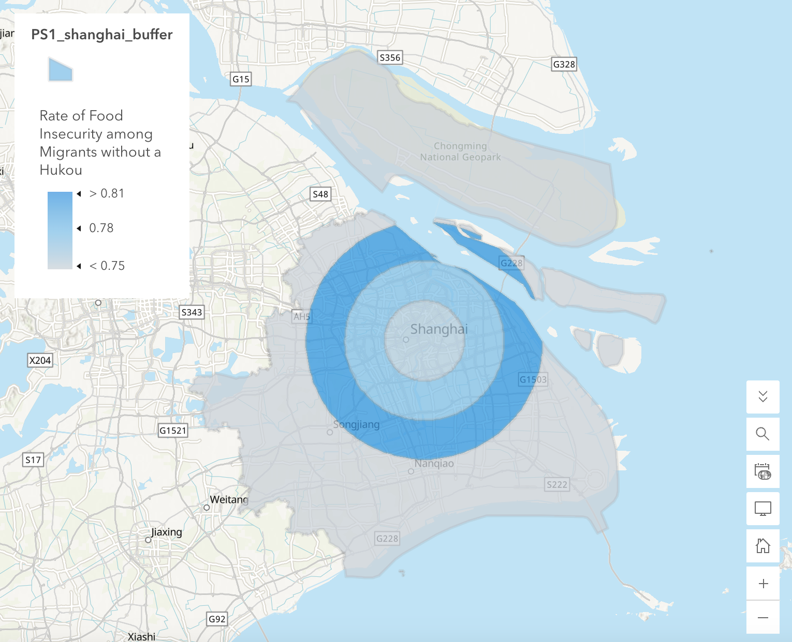
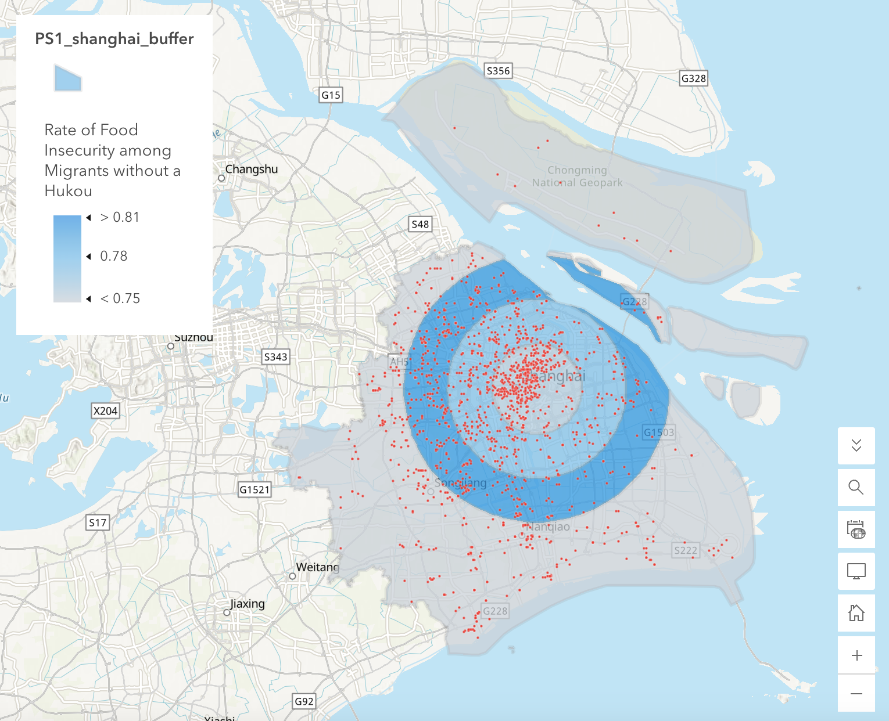
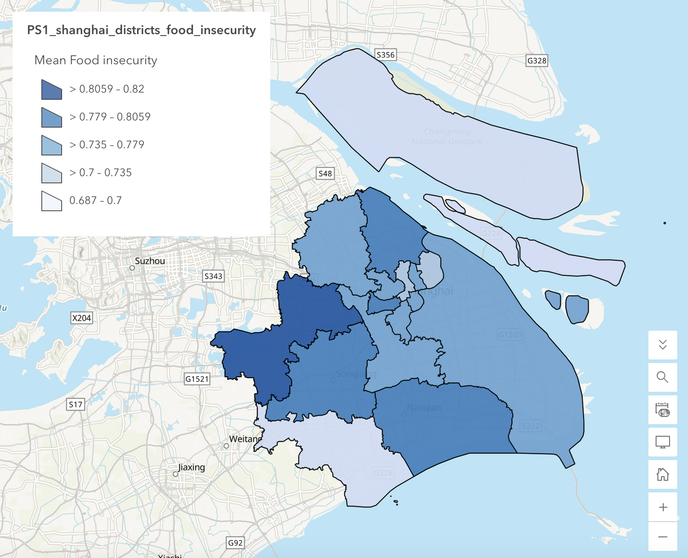
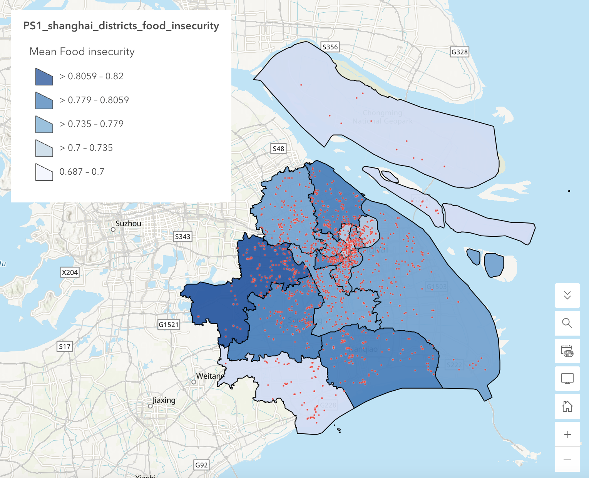

Problem Set 01 · October 2026
Inside the Margins: Food Insecurity Among Migrants Without a Hukou, Ring by Ring from Huangpu
The question
Among migrants without a Shanghai hukou, was the share in food insecurity categories 3–4 different across 10 km bands outward from the Huangpu centroid?
Categories 3 and 4 are moderately and severely food insecure. The four bands are 0–10, 10–20, 20–30 and 30+ km, set before I saw any result.
The data
- The survey.
LAB04_shanghai-lockdown-survey.csvholds 3,348 respondents to the 2022 Shanghai Lockdown Study, an online survey run by NYU Shanghai between 29 April and 1 June 2022. It was distributed in Chinese on Wenjuan Xing, checked by IP address, and paid 6 yuan. It is a purposive sample, recruited toward about 200 respondents per district, not a random draw. - Who my findings can speak about. Adult migrants without a Shanghai hukou who were in Shanghai in the last weeks of the 2022 lockdown, who were reachable by a paid online survey in Chinese, and whose address was geocoded. It is not “Shanghai residents”, and it is not all migrants.
- The codes I used.
Migration status2 (permanent migrant without a Shanghai hukou) and 3 (temporary migrant).Food insecurity1 to 4, where 1 is food secure, 2 mildly, 3 moderately and 4 severely insecure; the codebook confirms the order against the published shares (16, 15, 54 and 15 per cent). The codebook does not define 0. Eight respondents in the file have it, and two of them were in my group. - Unweighted. The study’s published percentages are weighted and my file has no weight column, so my shares are raw shares of this sample. The study puts 69 per cent of all respondents in categories 3–4 (54 + 15). My 77.6 per cent is a different group, migrants without a hukou with a coordinate, and unweighted, so the gap between them is not a finding.
- 553 gaps that look like data. 553 respondents have no coordinate, so any distance rule drops them. They are not a random loss: the problem set reports that 32.5 per cent of them screen positive for depression, against 27.0 per cent of the rest. My analysis cannot tell whether they also differ on food insecurity.
- Shared coordinates. 234 respondents in the file sit on 102 shared coordinates, including eleven in People’s Park. These are geocoder fallbacks, not neighbours. None of my filters removed them, so they stayed in. People’s Park is 2.04 km from my centre, so any fallbacks would land in the 0–10 km band.
- Addresses removed. The survey once held full postal addresses. They were removed before the file reached me, and the file doesn’t say who removed them or on what authority. The coordinates stayed, and a coordinate to six decimals is still an address, which is why nothing on this page is zoomed past city scale.
- The boundaries.
LAB04_shanghai-districts.geojsonholds Shanghai’s 16 districts from DataV.GeoAtlas (Alibaba), retrieved by the course in September 2026. It states no licence, so I record its terms as not stated. Thesurvey_codefield (1–16) was derived for the course by joining points to polygons; it is not in the source.
Who each step dropped
| Step | Rule | Rows left | Rows lost | Who was lost |
|---|---|---|---|---|
| 0 | The file | 3,348 | — | — |
| 1 | Has a coordinate | 2,795 | 553 | Respondents whose address was never geocoded |
| 2 | Migration status 2 or 3 | 1,612 | 1,183 | Locals and migrants with a Shanghai hukou |
| 3 | Food insecurity is not 0 | 1,610 | 2 | Respondents with an undefined code |
| 4 | Sorted into four bands | 1,610 | 0 | — |
The method
I measured distances in QGIS and did the counting and the mapping in ArcGIS Online. Both layers were in EPSG:32651 (WGS 84 / UTM 51N) for the distance step, so every distance is straight-line and in metres.
The plan, in plain words. Keep respondents with a coordinate. Keep those with Migration status 2 or 3. Drop Food insecurity 0. Measure each point’s distance to the centre. Sort the points into four bands. Recode food insecurity to 0 or 1. Count n, positives and share in each band. Compare the four shares beside their rough margins.
The centre. The centroid of the Huangpu polygon, from Centroids in QGIS: (355554.4, 3454525.2) in EPSG:32651. It is a point anyone can reproduce from the boundary file. It is not People’s Square or the Bund, and it is not where a resident would point if you asked them for the centre.
The distance. A new field dist_km in the Field Calculator:
distance($geometry, make_point(355554.4, 3454525.2)) / 1000. This is only right because the
layer is in metres.
The bands and the outcome. 0 < dist_km ≤ 10 is band 1, 10 < dist_km
≤ 20 band 2, 20 < dist_km ≤ 30 band 3, and anything beyond 30 km band 4, so a
point exactly on an edge goes to the inner band. Food insecurity 1 and 2 became 0, and 3
and 4 became 1, so the mean of the new field is the share.
The counts. I uploaded the layer with dist_km to ArcGIS Online as a private
working layer. For each band I filtered to it and read n from the record count and the positives from the
Sum of values of the 0/1 field. The rough margin is 2 × √(p × (1 − p) / n), which assumes a
random sample, and this is not one.
Sensitivity. Two reruns, each changing one decision and keeping the rest fixed. First the bands: the line moved from 10 km to 15 km, giving 0–15, 15–30, 30–45 and 45+ km. Then the cut: the 10 km bands again, with the outcome widened from categories 3–4 to categories 2–4.
The map. In ArcGIS Online Map Viewer I ran Find Centroids on the districts and kept
Huangpu, and Dissolve Boundaries on the 16 districts to get one municipal polygon. Create Buffers on the
centre at 10, 20 and 30 km with distinct rings gave three non-overlapping rings, and Overlay Layers →
Intersect clipped them to the municipality so the map doesn’t colour the sea. A second Create Buffers at
a single 30 km, no rings, gave a solid disc; Overlay Layers → Erase, with the municipality as input and
the disc as the erase layer, left the 30+ band. Merge Layers joined the three rings and the outer band,
with a text field band and a field band_order (1 to 4), and I added each band’s
share by hand to draw the choropleth. For the district version I ran Summarize Within on the 1,610
respondents with the district polygons and classed the shares into five natural breaks.
The map
Both maps show groups, bands or districts, never people. The dots appear only at city scale, with no attributes, and none of them can be placed at a building. The interactive web map is shared within NYU only; this page carries screenshots.




What I found
Unweighted shares from the 2022 Shanghai Lockdown Survey, a purposive online sample: 2,795 of 3,348 respondents had a coordinate, and 1,610 of those were migrants without a Shanghai hukou with a defined food insecurity code. Bands were defined by straight-line distance in EPSG:32651 from the centroid of Huangpu, measured in QGIS; the counts and the maps were made in ArcGIS Online. The share in categories 3–4 was 76.2, 78.3, 81.0 and 75.3 per cent from the inner band outward. In the main run every band’s rough margin overlaps all the others, so I report a possible peak at 20–30 km, not a gradient with distance from the centre.
Among the 1,610 migrants without a hukou, 77.6% (1,250) were in food insecurity categories 3–4. Across the four bands the share ran from 75.3% in the outermost to 81.0% in the third, a spread of 5.7 points against margins of about ±4 points in each band. It rose over the first three bands and dropped in the fourth. One stretch, 77.0 to 79.7%, lies inside all four ranges, so I can’t rule out the same true share everywhere.
The four bands
| Band | Respondents | Food insecurity = 3 or 4 | Share | Rough margin | Range |
|---|---|---|---|---|---|
| A (0–10 km) | 449 | 342 | 76.2% | ± 4.0 | 72.1–80.2 |
| B (10–20 km) | 415 | 325 | 78.3% | ± 4.0 | 74.3–82.4 |
| C (20–30 km) | 374 | 303 | 81.0% | ± 4.1 | 77.0–85.1 |
| D (30+ km) | 372 | 280 | 75.3% | ± 4.5 | 70.8–79.7 |
| All four | 1,610 | 1,250 | 77.6% | ± 2.1 | 75.5–79.7 |
The four counts add to 1,610, the number left after the filters, so nobody was lost in the sorting. Band C sits 4.8 points above band A. Their ranges overlap from 77.0 to 80.2, and the gap is smaller than the two margins added together.
Moving the bands
| Band | Respondents | Food insecurity = 3 or 4 | Share | Rough margin | Range |
|---|---|---|---|---|---|
| A (0–15 km) | 665 | 505 | 75.9% | ± 3.3 | 72.6–79.3 |
| B (15–30 km) | 573 | 465 | 81.2% | ± 3.3 | 77.9–84.4 |
| C (30–45 km) | 293 | 228 | 77.8% | ± 4.9 | 73.0–82.7 |
| D (45+ km) | 79 | 52 | 65.8% | ± 10.7 | 55.2–76.5 |
The 30 km edge is common to both sets of bands, so the last two new bands should add back to the old outer band, and they do: 293 + 79 = 372 respondents and 228 + 52 = 280 positives. The middle peak stays. The 15–30 km band is highest at 81.2%, 5.3 points above the inner band, and their ranges meet only between 77.9 and 79.3. What is new is at the edge. The 45+ km band has the lowest share, 65.8%, 15.4 points below the 15–30 km band. It is the only gap in either run at categories 3–4 whose ranges don’t touch. But it rests on 79 respondents, below the 100 the course sets as a target, and the main run’s 30+ band had hidden it by averaging it with the 293 respondents at 30–45 km (77.8%).
Moving the cut
| Band | Respondents | Food insecurity = 2, 3 or 4 | Share | Rough margin | Range |
|---|---|---|---|---|---|
| A (0–10 km) | 449 | 391 | 87.1% | ± 3.2 | 83.9–90.2 |
| B (10–20 km) | 415 | 365 | 88.0% | ± 3.2 | 84.8–91.1 |
| C (20–30 km) | 374 | 350 | 93.6% | ± 2.5 | 91.0–96.1 |
| D (30+ km) | 372 | 334 | 89.8% | ± 3.1 | 86.6–92.9 |
Counting mildly insecure respondents as insecure puts 1,440 of 1,610 (89.4%) in the outcome, so there is little room left for bands to differ. The same shape appears anyway: 87.1, 88.0, 93.6, 89.8. Band C is 6.5 points above band A, and its range (91.0–96.1) clears band A’s (83.9–90.2) by 0.8 points. It only just clears band B’s (84.8–91.1), and it overlaps band D’s. This is the one place where the middle-band peak is larger than the margins, and the margins assume a random sample.
Districts instead of rings
The district map doesn’t show rings. Its five classes run from 0.687 to 0.82, about 13 points, and the darkest district lies in the west, not in a ring around Huangpu. With 1,610 respondents over 16 districts, about 100 each if they were spread evenly, a district’s rough margin is near ±8 points, wider than any one of the five classes. So the classes mostly separate districts the margins can’t tell apart, and I would read Figure 2 as a check that no obvious ring was missed, not as a ranking.
What this does not show
My analysis cannot see migrants without a hukou who were never reached by a paid online survey in Chinese, the 553 respondents with no coordinate, or how far anyone was from the centre by road: it measures a straight line from the middle of one district’s polygon.
The sensitivity result. The answer did not flip. Moving the line to 15 km kept the middle-band peak (+5.3 points over the inner band), and moving the cut to categories 2–4 kept it (+6.5), against +4.8 in the main run. In the main run the ranges overlap, so my main result is the third of the outcomes the problem set describes: a difference that shrinks inside the margins. Two things went beyond that. The broader cut pushed band C’s range clear of band A’s, and the 15 km bands exposed a 45+ km band at 65.8% on 79 respondents. I would call the middle peak a pattern worth testing properly in Week 8, and the far-edge drop a hint that 79 respondents can’t carry. Differences here are taken from the rounded shares shown.
The decisions behind the numbers. The centre is the Huangpu centroid, chosen because it is reproducible, not because it is where the city’s middle is. The 10 km width and the 30 km edge are my numbers, and the 15 km run shows that moving them changes what the outer bands say. I kept the shared coordinates in and did not re-run without them, so the inner band may carry some geocoder fallbacks. The ring polygons on the map came from ArcGIS Online, which uses geodesic buffers, while the respondents were assigned to bands by planar distance in EPSG:32651. The map’s centre was also computed again in ArcGIS Online, separately from the QGIS centroid. I expect them to agree closely, but I did not compare the two points or test whether any respondent would change band.
The sample. The rough margins assume a random sample. This one was recruited toward about 200 respondents per district, so the size of a band reflects the recruitment as much as the city, and the true uncertainty is larger than the margins say. A band’s share is a fact about that group of respondents, not about any one of them.
I have not redistributed either source file. The survey is not public, and the boundary file has no stated licence. I have included derived shares and city-scale map images, identified the sources, and noted that the boundary terms are unspecified. The web map is shared within NYU only.
AI use: I used Claude to turn my results notes into this entry and to check the arithmetic for the shares and rough margins. The question, the analysis in QGIS and ArcGIS Online, the maps and the interpretation are my own, and I checked the figures here against the counts in my own tables.